SALAS Y PARQUES DEL MUSEO
Sala Malvinas Argentinas
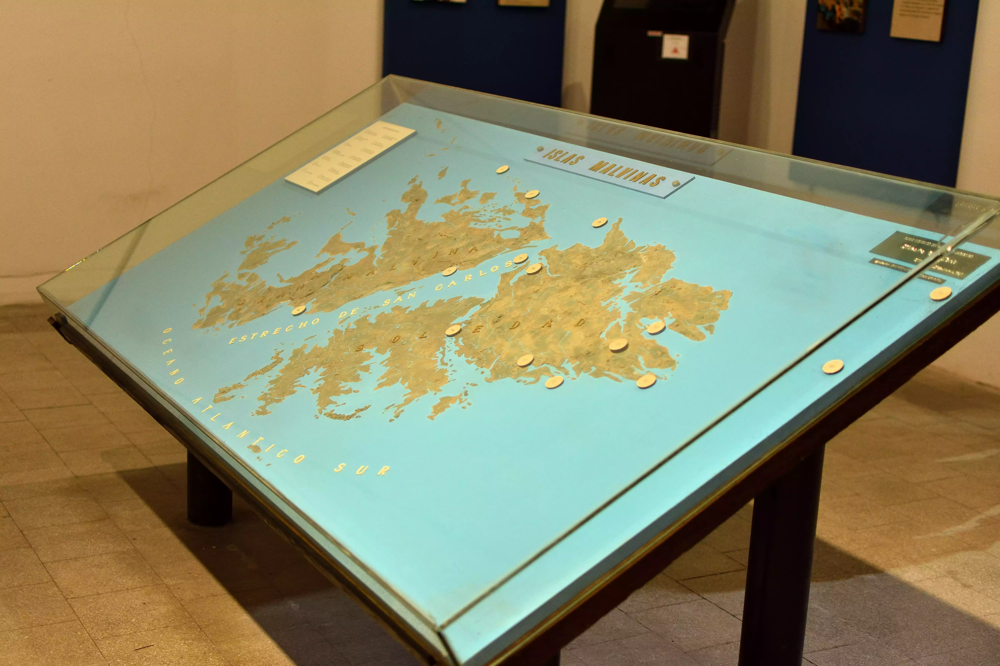Representa la historia político-militar del archipiélago, desde la dominación española hasta el conflicto librado con el Reino Unido de Gran Bretaña (1982). Exhibición de armas y equipos uitilizados en aquella gesta.
Exhibición de Historia Militar
Sala de la Libertad
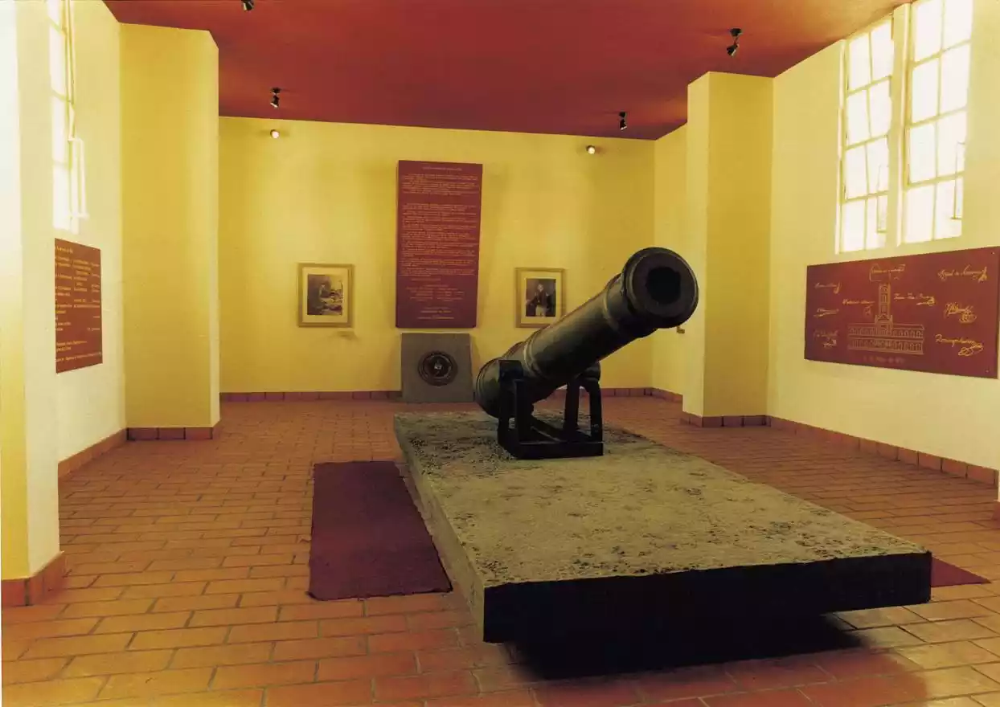Representa el período colonial, las fundaciones, los inicios de las armas argentinas. Desde la creación del Virreinato del Río de la Plata, pasando por las invasiones inglesas, hasta las batallas por la emancipación nacional.
Período Colonial e Independencia
Sala del Libertador
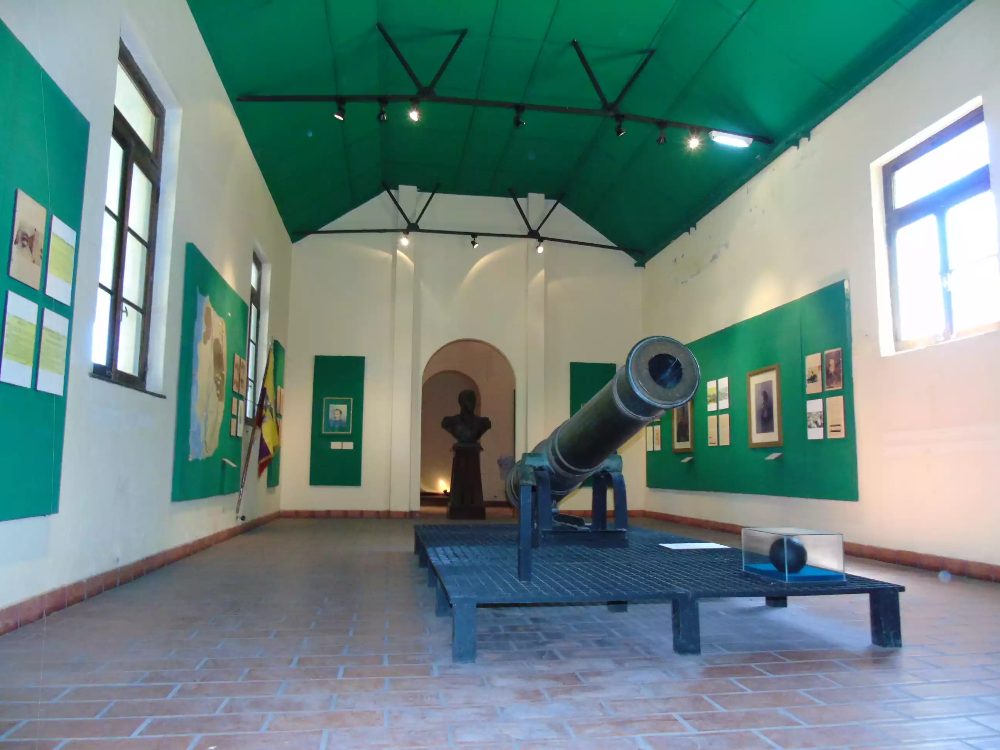Dedicada a la figura e historia del General José de San Martín, su vida, sus campañas militares y su decisivo accionar durante la lucha por la independencia de América Latina.
Homenaje a José de San Martín
Sala de Misiones de Paz

Expone la participación de la Argentina en las diversas misiones de paz de la ONU, especialmente, el rol cumplido por el Ejército Argentino como parte de ellas a lo largo de la historia.
Esfuerzos de Mantenimiento de Paz
Sala de Infantería
Representa la historia de los regimientos de la infantería creados durante el período de la independencia, los hombres que forjaron el derrotero de la misma, y las especialidades de la infantería moderna.
Evolución Histórica de Infantería
Sala de Artillería
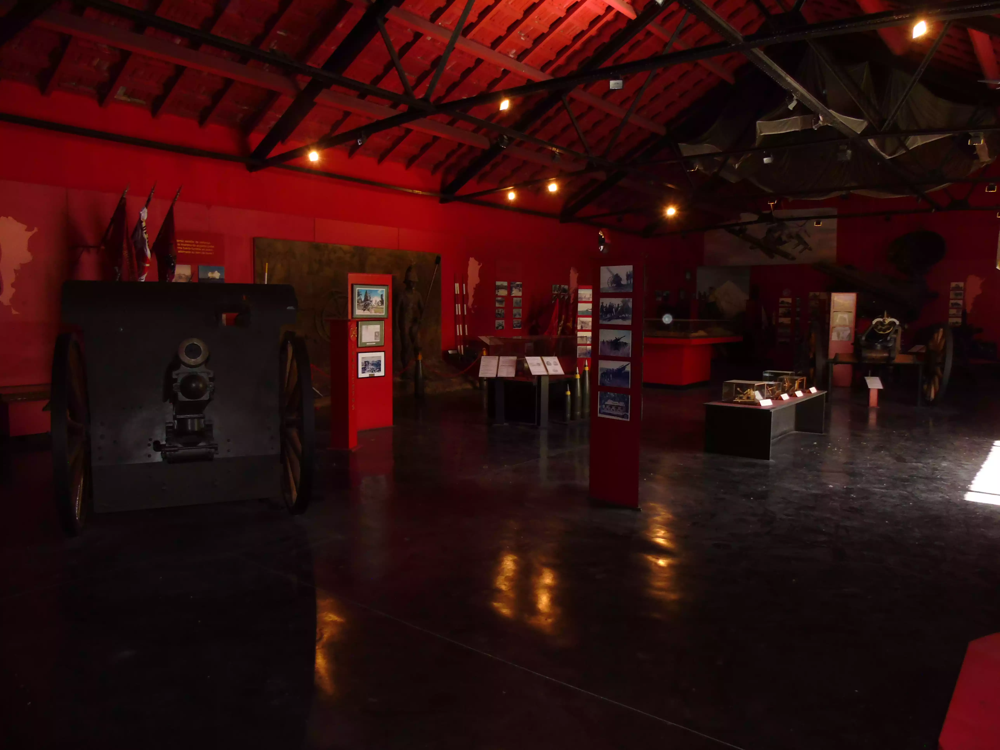Muestra la evolución del arma y sus regimientos desde el período de la independencia hasta nuestros días y aquellas batallas en las que desempeñó un rol fundamental.
Desarrollo Histórico de Artillería
Sala de Bandas Militares
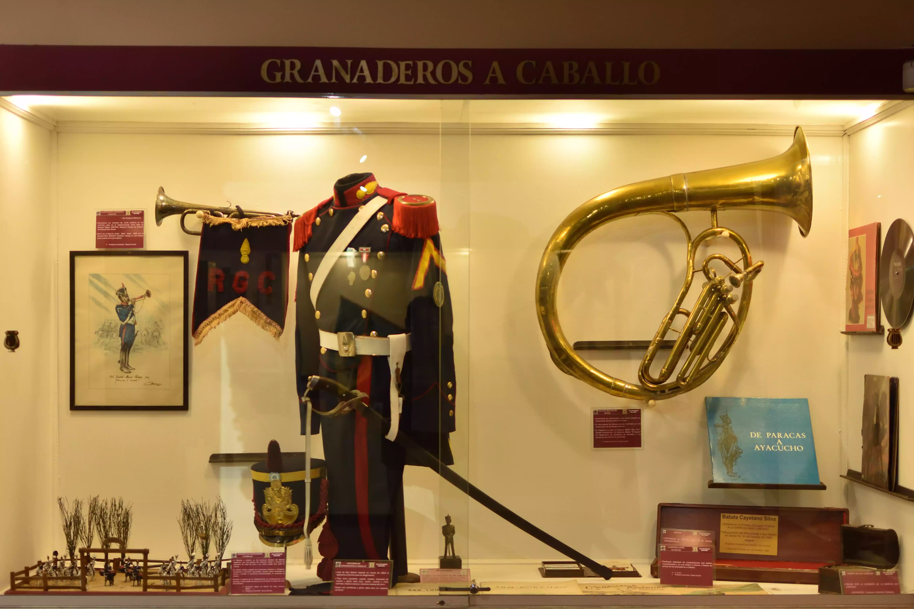Muestra el accionar de la especialidad en etapas claves de la historia argentina: la creación del Himno Nacional y su acompañamiento al ejército en las grandes batallas.
Herencia Musical Militar
Sala de Intendencia
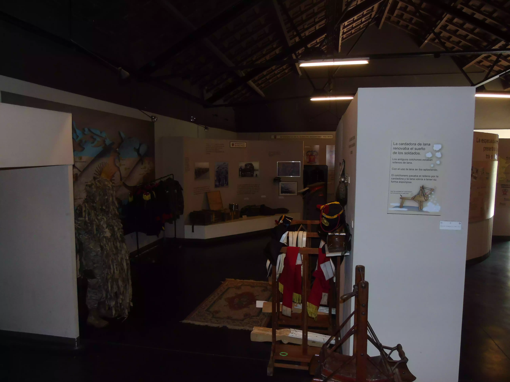Exhibe en su interior muestras del apoyo que ha brinado la especialidad al ejército a través de las distintas etapas de nuestra historia.
Apoyo Logístico Militar
Sala de Ingenieros
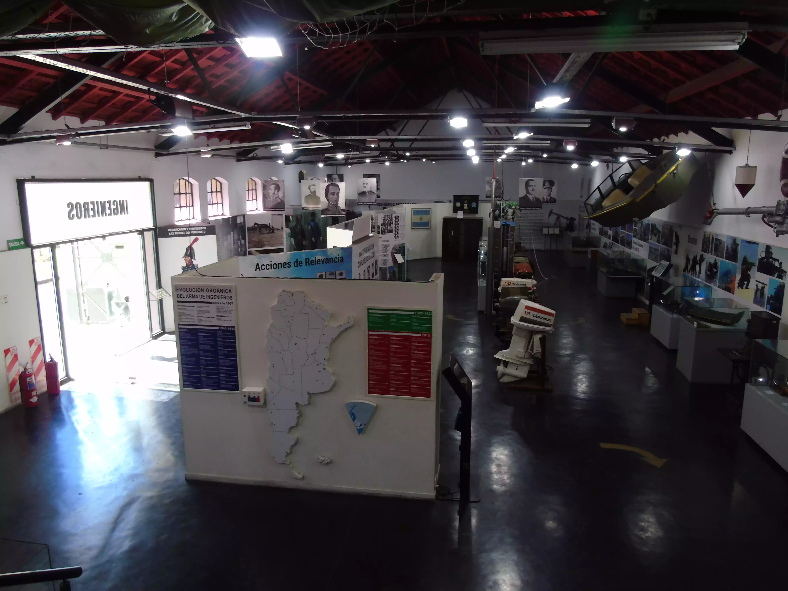Exhibe en su interior muestras del apoyo que ha brinado la especialidad al ejército a través de las distintas etapas de nuestra historia.
Apoyo Logístico Militar
Sala de Comunicaciones
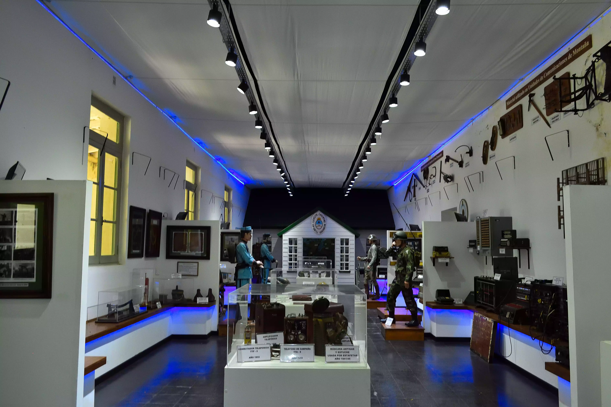Exhibe en su interior muestras del apoyo que ha brinado la especialidad al ejército a través de las distintas etapas de nuestra historia.
Apoyo Logístico Militar
Parque de Artillería
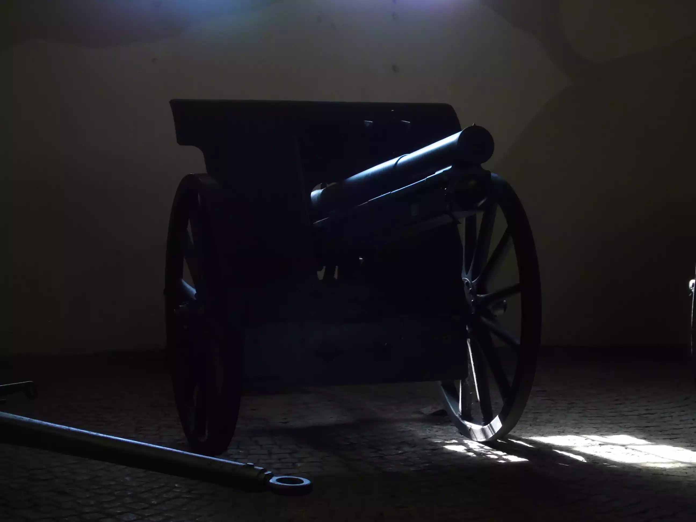Se pueden observar distintas piezas que fueron utilizadas por la Fuerza en distintas épocas.
Colección Histórica de Artillería
Parque de Blindados

En este parque se exhiben vehículos blindados que pertenecieron al Ejército y fueron reemplazados posteriormente, ente ellos los conocidos y queridos Sherman.
Exhibición de Vehículos Blindados
Parque de Aviacion
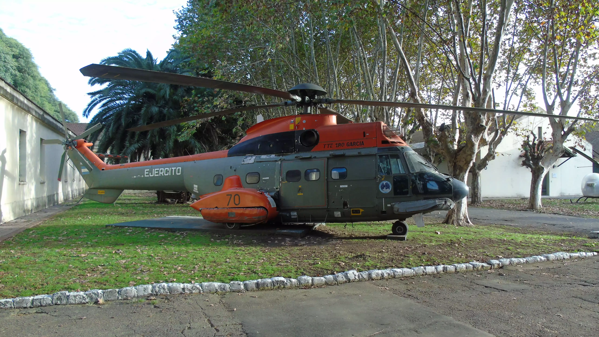Aquí se exhiben distintos tipos de vehículos a rueda, semi-oruga y anfibios que prestaron servicio hace algunos años.
Colección de Vehículos Militares
Sala Capilla
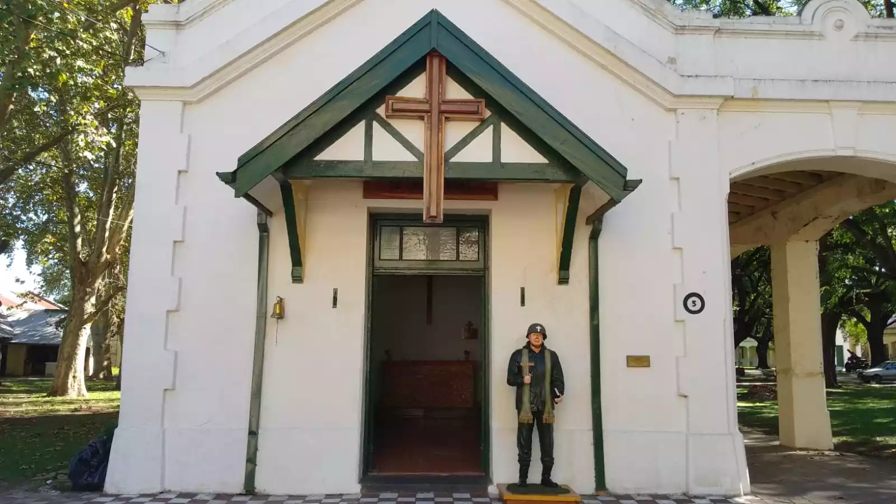Aquí se exhiben distintos tipos de vehículos a rueda, semi-oruga y anfibios que prestaron servicio hace algunos años.
Colección de Vehículos Militares